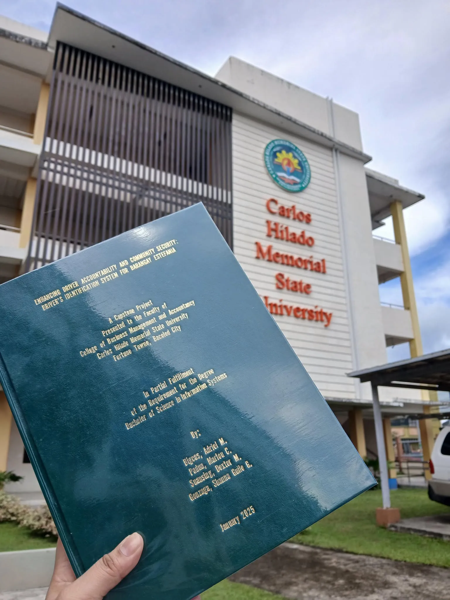

Our first project introduction, the beginning of our journey
It was our first experience being part of this journey, a capstone
proposal, although our system and manuscript need to be revised for
the vast majority. It might seem overwhelming, nerve-racking, and
incompetent, but it is definitely worth it. It took an hour and a half
to complete the process deliberately.
Discussion with our Client
After numerous revisions and almost an hour and a half of standby, we
invited our client to review the system we developed, which was
designed to provide security and safeguards for the Driver’s
Identification System in their residence. This ensured our objectives
aligned with their expectations.
System Review
Final Defense
Capstone Defended!
This is it! It's over! After countless sleepless nights, revisions, and late-night debugging, the day has finally come! Capstone Defended! Words can't be enough to describe how blissful and overjoyed I am. Our hard work has finally paid off.
Bookbind Successfully
This picture tells the story of all the hard work behind our manuscript—countless revisions, late nights, and tracking down mentors for signatures. Now, it's finally approved and ready for our internship. Not to mention, this is not just an ordinary book; it represents the blood, sweat, and self-doubt that come with it. (P.S: Photo not mine)
